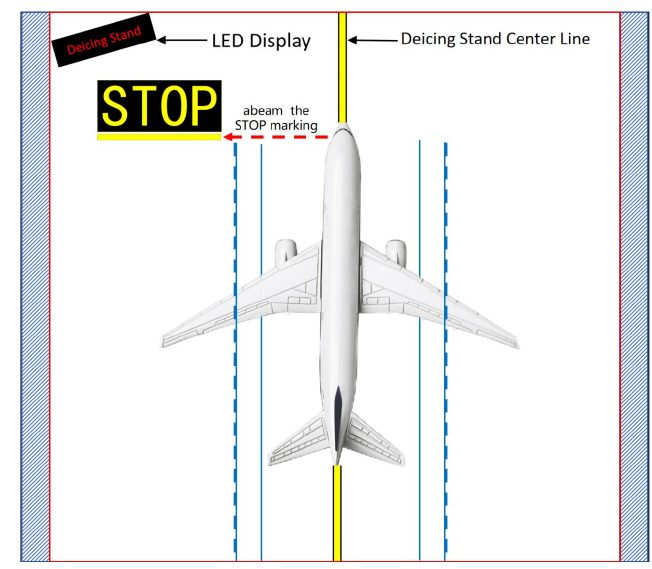
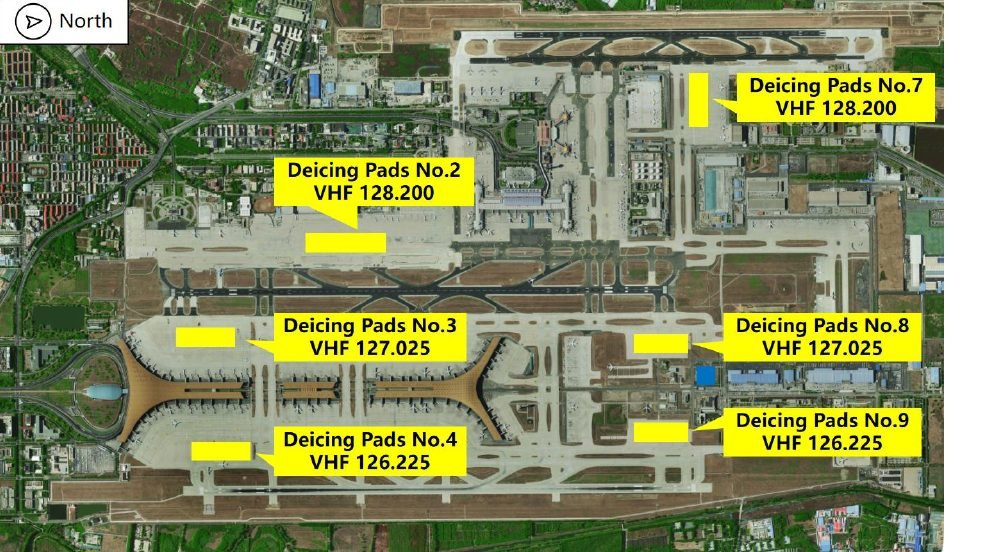

❄️ 베이징 수도공항(PEK/ZBAA) 제빙 — 조종사 브리프
BCIA de-icing Pilot Brief Handbook 한글 정리
← 돌아가기
한눈에 보기
- 서리(frost) → 주기장에서 제상 · 눈(snow) → 원격 제빙패드(일부 기종은 주기장 제빙 가능)
- 제빙 요청은 STD 45분 전까지 FOC/AOC에 — 방식(1단계/2단계)과 부위(날개·동체·수평·수직안정판)
- Beijing Delivery 허가 받을 때 "aircraft de-icing required"
- 패드에서는 마샬러 없음 → STOP 표지 옆(abeam)에 정지, 파킹브레이크, 엔진 GND IDLE
- VHF 담당은 제빙/방빙 시작 시각만 알려줌 (용액 종류·비율·양은 VHF로 묻지 말 것)
- 끝나면 즉시 Beijing Apron에 택시 허가 요청 · 택시아웃 후 조종면 점검
Ⅰ. 제상(Defrosting) 방식
서리가 낀 날씨에는 주기장(parking stand)에서 제상한다.
Ⅱ. 제빙(De-icing) 방식
눈이 오는 날씨에는
원격 제빙패드(remote de-icing pad)에서 제빙한다. 일부 지정 기종은 주기장 제빙도 가능하다.
어떤 방식인지 확실하지 않으면 가능한 한 빨리 FOC/AOC와 지상조업사에 확인한다.
* 도착 전에 미리 제상·제빙(pre-defrosting/pre-de-icing)을 받은 항공기도, 도착 후 다시 제상·제빙이 필요한지 승무원이 확인해야 한다.
Ⅲ. 주기장 제상·제빙 절차
- 제빙·제상 요청을 STD(출발 예정 시각) 45분 전까지 FOC 또는 AOC에 알린다 → 제빙 업체로 전달된다.
- 항공기–제빙 업체 사이 교신은 인터폰으로 한다. 비상 상황이 생기면 인터폰 담당자에게 알린다.
Ⅳ. 원격 제빙패드 절차
(1) 제빙 요청은 어떻게?
- STD 45분 전까지 FOC 또는 AOC에 알린다.
- 요청 내용
- 방식: 1단계(제빙만) 또는 2단계(제빙 + 방빙)
- 부위: 날개 · 동체 · 수평안정판 · 수직안정판
- Beijing Delivery에 허가 요청할 때 "aircraft de-icing required" 라고 알린다.
(2) DEICING HOLDING POSITION(제빙 대기 위치)에 도착하면?
- 해당 제빙패드의 VHF 담당(communicator)과 교신한다 (주파수는 아래 표).
- VHF 담당의 지시에 따라 노란 유도등(yellow light)을 따라 지정 패드로 이동한다. 등이 고장 나면 Follow-me 차량이 안내한다.
- 대기 위치에 도착한 뒤에는 VHF 담당이 제빙 요청 내용을 다시 확인하지 않는다.
요청을 바꿔야 하면 조종사가 먼저 VHF 담당에게 말해야 한다.
(3) 제빙패드에 들어가면?
- 엔진을 켠 상태의 제빙에는 마샬러가 없다. 모든 패드에 "STOP" 표지가 있으니, 항공기를 STOP 표지 옆(abeam)에 세우고 대기한다.
- 파킹브레이크를 걸고 제빙 준비를 한다. 각 단계가 끝날 때마다 즉시 VHF 담당에게 알려 제빙 차량이 동시에 준비할 수 있게 한다.
- 파킹브레이크가 걸리면 제빙 차량이 패드로 들어와 대기한다.
- 제빙 준비가 끝나면 제빙 차량이 작업을 시작한다.
- 엔진 출력은 GND IDLE. 지시가 있을 때까지 절대 움직이지 않는다. 비상 시 VHF 담당에게 알린다.

LED 표시판(Deicing Stand) · 패드 중심선(노란 선) · 기수가 STOP 표지 옆(빨간 점선)에 오면 정지
(4) 제빙이 끝나면?
- VHF 담당은 제빙/방빙 시작 시각만 알려준다. 용액 종류·혼합비·양은 VHF로 묻지 않는다.
- 최대한 빨리 Beijing Apron에 연락해 택시아웃 허가를 받는다. 택시아웃 후 조종면(flight control) 점검을 한다.
Ⅴ. 기타 주의사항
(1) 제빙액 — 모든 업체가 Newave Aerochemical 제품을 같은 비율로 사용
| Type I | Type II |
|---|
| 제조사 | 모델 | 비율 | 제조사 | 모델 | 비율 |
|---|
| Chengdu Newave | FCY-1Bio+ | 50:50 | Chengdu Newave | FCY-2 | 100:0 |
→ 홀드오버 타임(HOT)은 위 제품·비율로 찾는다. 앱의 홀드오버 표에서 FCY-2(Type II)를 확인하세요.
(2) 기수·윈드실드 등에 눈이 쌓여 있으면
제빙패드로 가기 전에
원래 주기장에서 지상요원이 먼저 치운다.
(3) 제빙패드 위치와 VHF 주파수
| 패드 | VHF | 위치(그림 기준) |
|---|
| No.2 | 128.200 | 서쪽 활주로 쪽, T1·T2 남쪽 |
| No.3 | 127.025 | T3 남쪽, 서편 |
| No.4 | 126.225 | T3 남쪽, 동편 |
| No.7 | 128.200 | 공항 북쪽, 서편 |
| No.8 | 127.025 | 공항 북쪽, 중앙 |
| No.9 | 126.225 | 공항 북쪽, 동편 |

⚠ 그림은 오른쪽이 북쪽(▷ North)입니다. 위치 설명은 그림을 기준으로 한 대략적인 것이니 실제 패드 배정은 VHF 지시를 따르세요.
출처: Beijing Capital International Airport Co., Ltd. 「BCIA de-icing Pilot Brief Handbook」 · 영문 원본 PDF
한글 정리는 참고용입니다. 회사 절차·AIP·관제 지시가 우선합니다.